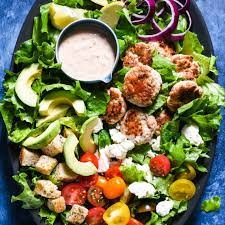
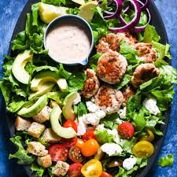

My Faovrite Recipes
I love to cook! Over the last couple months I have had fun playing with recipes for some of my favorite foods and making them healthier. For my adapted recepies, such as the brownies, I am sure you will not be able to tell the difference between a real and a black bean brownie they are so good! Other recepies I have included are staples that I always have in my fridge. Enjoy!
Black Bean Brownies

Ingredients
- 1/2 cup of black beans
- 2 tbso cocoa powder
- 1/2 cup almond flower
- 1/4 tsp salt
- 1/2 cup of agave
- 1/4 cup of vegetable oil
- 2 tsp vanilla extract
- 1/2 tsp baking powder
- 2/3 cup of non dairy chocolate chips (my favorite brand is EnjoyLife)
Instructions
- preheat the overn to 350 F
- combine all ingredients in a food processor and blend very well. This may take a few minuets, the smoother the better.
- Pot into an 8x8 greased pan
- add extra chocolate chips to the top of the batter for decoration
- bake for 16 minuets!
- My faovirte way to eat these is after letting them sit in the freezer for 15-20 minetes after they have cooled, then keeping them in the fridge to eat later.
My Go To Salad
 

Ingredients
- Romaine lettuce
- brocoli flourettes
- beets
- sweet potatoes
- pumpkin seeds
- turkey burger
Instructions
- Cook sweet potatoes, brocoli, and beets. My favorite way to do this is in the air frier. Set the airfrier to 390F for 15 minuets. Start with just the sweet potatoes. After 7 minuets add the brocoli. Then, after 3 more minuets add the beets. Season with olive oil, herbs, and salt.
- Prepare a turkey burger however you like it.
- Wash letuce and chop into small strips
- Compine in a bowl and add pumpkin seeds to the top! I like to dress with tahini-siracha dressing.
White Bean Dip

Ingreediants
- 1 can of cannellini beans
- 1 to 2 tbsp tahini
- 1 to 2 tbsp salt
- 1/4 cup olive oil
- 2-3 squeezes of fresh lemon
Intructions
- Combine all ingredients into a blender and blend! Easy as that.
- Add more tahini, salt, or lemoon to your liking
- If the consistancy is too thick, add a tbsp of water.